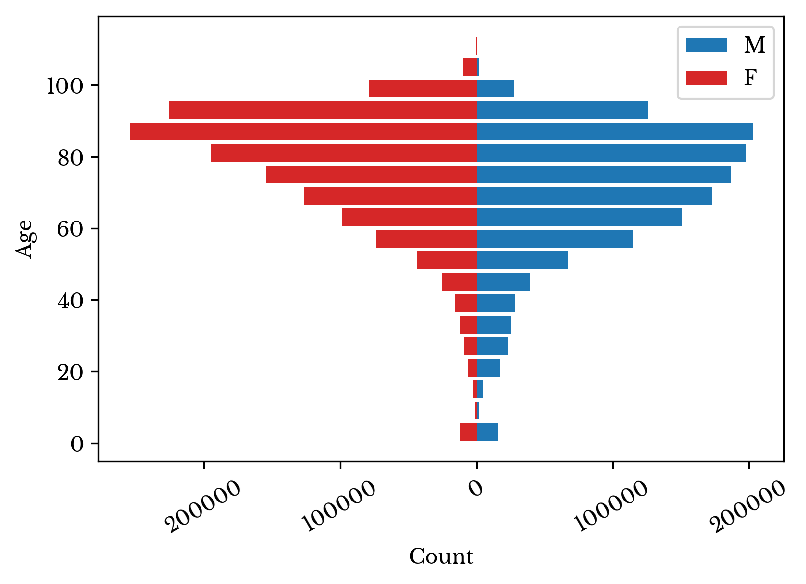
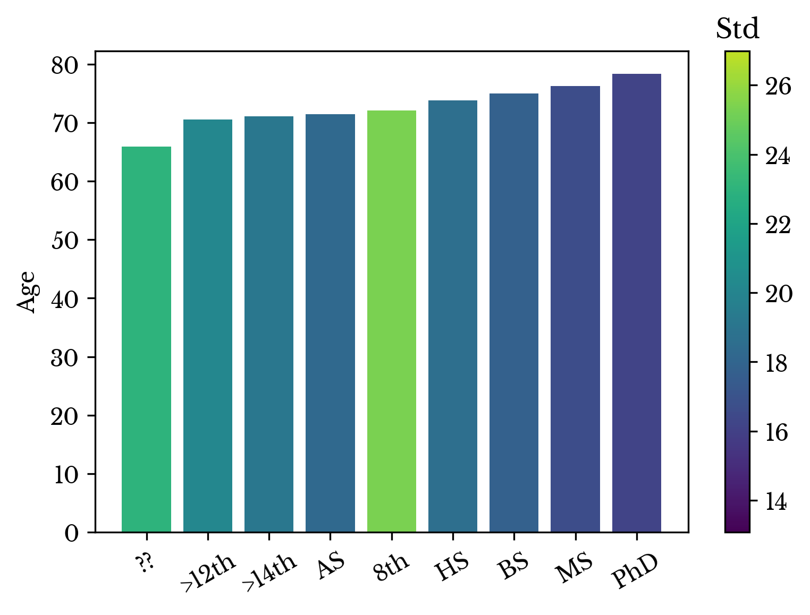

Mortality in the United States and Its Causes
Sat, 24 Feb 2018
Data Science, Data Visualization, Death, Medicine, Statistics
In this chapter, vital statistics for the United States of America are explored. The Center for Disease Control maintains several datasets containing vital statistics for the nation. These datasets contain records of deaths organized by year. Each record includes age, gender, race, cause of death, and other details. This chapter explores data for the year 2016.The Human Lifespan
Figure 1 shows the distribution of age at death for all records. The plot shows a right-skewed distribution as expected. The leftmost bar stands out somewhat. This bar enumerates infant mortality.Figure 1: Distribution of Age at Death
Considering only the data in this first bar, another histogram is constructed. This histogram shows the age in months for these records. Figure 2 shows that infant deaths occur most frequently after birth and sharply decline thereafter.
Figure 2: Infant Mortality
Next, the rightmost bars of the histogram are considered. These bars contain records for those older than 100 years old. The records are grouped by gender and race and displayed in a bar plot. The y-axis represents the percentage of centenarians for each race.
Figure 3: Percentage of Centenarians by Race
Figure 3 shows several things. The first is that the majority of people who live at least 100 years are women. In fact, females account for roughly 82% of this number. The second is that people of some races are more likely to survive their first century. Japanese and Chinese are significantly more likely to do so.
Next, records of all ages are grouped by gender. The distributions for men and women are plotted in both a line and bar chart. Figure 4 shows that men die earlier than women. This trend begins in the late teenage years and continues into adulthood. The count of female records outpaces men only near the end of the human lifespan.


Figure 4: Age Distribution at Death by Gender
The average lifespans of men and women are compared. It is found that men live roughly 6.6 years shorter than women. This difference is highly significant. A Welch's t-test for the difference of means has \(t \approx -303\).
Next, the average and standard deviation age at death is computed for each race. The result is shown in a bar plot.
Figure 5: Age at Death by Race
Figure 5 shows that white and Asian people live longer than other races on average. Japanese people have the longest average lifespan together with the lowest standard deviation. The low standard deviation suggests fewer Japanese people die early in life.
Figure 6: Distribution of Age at Death by Race
This is confirmed by plotting the distribution of several races side by side. Figure 6 shows that relatively fewer Japanese people die before reaching the end of the human lifespan.
Manner of Death
Next, the manner of death is explored. The dataset classifies the manner of death into 7 categories. The categories and their counts are listed in Table 1.| Description | Class |
|---|---|
| Natural | 2212118 |
| Unspecified | 294239 |
| Accident | 160768 |
| Suicide | 45155 |
| Homicide | 20544 |
| Unknown | 12467 |
| TBD | 4573 |
Table 1: Distribution of Age at Death by Race
The average age at death for each category is shown in Figure 7. Deaths from natural causes have the greatest average age. Homicides have the least.
Figure 7: Average Age at Death by Manner of Death
Next, the records are grouped by manner of death and race. Bar charts for accidents, suicides, and homicides are constructed. The y-axis represents the percentage of all deaths for each race accounted for by a specific manner.

Figure 8: Manner of Death by Race
The chart for homicides show that Japanese and Chinese have the lowest homicide rates among all races. This factor contributes to the longevity of these races as death by homicide typically occurs earlier in life. Conversely, homicide rates are highest among blacks. This factor contributes to the relatively shorter average lifespan of the race.
Underlying Cause of Death
Next, underlying cause of death is explored. Each record is labeled with an ICD-10 code indicating the underlying cause of death. The cumulative percentage of records accounted for by top diseases is computed and the result is shown in Figure 9. As can be seen, a small number of causes are responsible for a large number of deaths. Well over 60% of all deaths are the result of less than 50 causes of mortality.Figure 9: Cumulative Percentage of Deaths by Top Diseases
Next, the records are grouped by ICD-10 code and the counts of each are computed. The result is shown in a bar chart in Figure 10. The corresponding ICD-10 codes are listed in Table 2.
Figure 10: Leading Causes of Death
| ICD-10 | Age | Std. Age | Count | Desc |
|---|---|---|---|---|
| I251 | 79.9 | 12.9 | 161079 | Atherosclerotic Heart Disease |
| C349 | 71.7 | 11.0 | 146786 | Malignant Neoplasm: Bronchus or Lung |
| J449 | 77.2 | 11.0 | 116117 | Chronic Obstructive Pulmonary Disease |
| G309 | 86.9 | 7.7 | 113096 | Alzheimer Disease |
| I219 | 74.5 | 14.0 | 107594 | Acute Myocardial Infarction |
| F03 | 87.4 | 7.9 | 100901 | Dementia |
| I500 | 83.6 | 11.6 | 64439 | Congestive Heart Failure |
| I250 | 71.9 | 14.8 | 62909 | Atherosclerotic Cardiovascular Disease |
| I64 | 81.2 | 12.1 | 61818 | Stroke |
| J189 | 79.7 | 14.3 | 42189 | Pneumonia |
Table 2: Leading Causes of Death
Heart disease accounts for the largest number of deaths. Atherosclerosis, the build-up of plaque on the arterial walls, is involved in several of the leading causes of death. Lung cancer and COPD are also responsible for a sizable portion of the records. Both of these pulmonary conditions are strongly associated with smoking.
Next, causes of death in those under the age of 50 are explored. A similar bar chart and table are constructed from these records.
Figure 11: Leading Causes of Death under 50
| ICD-10 | Age | Std. Age | Count | Desc |
|---|---|---|---|---|
| X42 | 40.8 | 13.0 | 19167 | Accidental Poisoning by and Exposure to Narcotics |
| X44 | 42.2 | 13.5 | 16872 | Accidental Poisoning by and Exposure to Unspecified Drugs |
| X95 | 32.3 | 13.3 | 11466 | Assault by Unspecified Firearm Discharge |
| X70 | 40.0 | 16.7 | 8425 | Intentional Self-Harm by Hanging Strangulation and Suffocation |
| V892 | 43.0 | 21.5 | 7900 | Person Injured in a Motor-Vehicle Accident |
| X74 | 50.1 | 19.6 | 6826 | Intentional Self-Harm by Unspecified Firearm Discharge |
| I219 | 74.5 | 14.0 | 5375 | Acute Myocardial Infarction |
| C509 | 68.7 | 14.9 | 4880 | Malignant Neoplasm: Breast |
| R99 | 55.9 | 28.8 | 4873 | Other Ill-Defined and Unspecified Causes of Mortality |
| I250 | 71.9 | 14.8 | 4284 | Atherosclerotic Cardiovascular Disease |
Table 3: Leading Causes of Death Under 50
The leading causes of death in those under 50 are not due to disease processes. Drug overdose, homicide, and suicide lead. The only diseases present in the top 10 leading causes of death are breast cancer and heart disease.
Next, deaths caused by cancer are considered for all ages. Lung cancer accounts for a clear majority of deaths due to cancer. The large number of deaths due to pancreatic cancer are presumed due to the present difficulty in treating it. The prognosis for breast cancer is better, though it is a more common disease.
Figure 12: Leading Causes of Death by Cancer
| ICD-10 | Age | Std. Age | Count | Desc |
|---|---|---|---|---|
| C349 | 71.7 | 11.0 | 146786 | Malignant Neoplasm: Bronchus or lung |
| C259 | 71.8 | 11.9 | 42121 | Malignant Neoplasm: Pancreas |
| C509 | 68.7 | 14.9 | 41913 | Malignant Neoplasm: Breast |
| C189 | 72.0 | 14.0 | 39249 | Malignant Neoplasm: Colon |
| C61 | 78.6 | 10.5 | 30396 | Malignant Neoplasm: Prostate |
| C80 | 72.4 | 13.4 | 27845 | Malignant Neoplasm: Unspecified Site |
| C679 | 77.7 | 11.6 | 16586 | Malignant Neoplasm: Bladder |
| C719 | 64.1 | 16.1 | 15303 | Malignant Neoplasm: Brain |
| C159 | 69.5 | 11.9 | 15285 | Malignant Neoplasm: Esophagus |
| C56 | 69.8 | 13.0 | 14242 | Malignant Neoplasm: Ovary |
Table 4: Leading Causes of Death by Cancer
Next, methods of suicide are considered. A similar table and bar chart are constructed only from records due to suicide.
Figure 13: Most Common Methods of Suicide
| ICD-10 | Age | Std. Age | Count | Desc |
|---|---|---|---|---|
| X74 | 50.1 | 19.6 | 13948 | Intentional Self-Harm by Unspecified Firearm Discharge |
| X70 | 40.0 | 16.7 | 11682 | Intentional Self-Harm by Hanging Strangulation and Suffocation |
| X72 | 50.3 | 19.8 | 6116 | Intentional Self-Harm by Handgun Discharge |
| X64 | 50.3 | 15.1 | 3241 | Intentional Self-Poisoning by and Exposure to Unspecified Drugs |
| X73 | 47.7 | 19.5 | 2892 | Intentional Self-Harm by Rifle, Shotgun and Larger Firearm Discharge |
| X67 | 47.9 | 16.7 | 1369 | Intentional Self-Poisoning by Exposure to Gases (CO2, Helium, etc) |
| X80 | 43.3 | 18.0 | 1123 | Intentional Self-Harm by Jumping from a High Place |
| X61 | 49.1 | 15.5 | 1064 | Intentional Self-Poisoning by Exposure to Sedatives |
Table 5: Most Common Methods of Suicide
The most common method of suicide, by a significant margin, is via firearm. Hanging is also prevalent. Intentional poisoning is a distant third.
Education Levels
Finally, records are grouped by education level. Education level is recorded as a categorical variable with 9 categories based on different educational milestones. The descriptions for each of the categories are shown in Table 5.| Category | Description |
|---|---|
| 1 | 8th grade or less |
| 2 | 9 - 12th Grade, No Diploma |
| 3 | High School Graduate or GED Completed |
| 4 | Some College Credit, but No Degree |
| 5 | Associate Degree |
| 6 | Bachelors Degree |
| 7 | Masters Degree |
| 8 | Doctorate or Professional Degree |
| 9 | Unknown |
Table 6: Education Levels with Categorical Labels
The categories increase with level of education. Records with unknown education level are discarded; they account for less than 2% of all records.
A bar chart is constructed of the average age of each group. The result is shown in Figure 14. People who complete at least a bachelor's degree live longer on average.

Figure 14: Average Age at Death by Education Level
The bar chart also suggests a modest increasing trend with education. To further explore this trend, a scatter plot is constructed from the data points. A trend line is fit to the data and the coefficient of determination is computed.
Figure 15: Relationship Between Education and Lifespan
The \(R^{2}\) of the fit is 0.641, the general F-statistic of the model is 12.512 with a corresponding p-value = 0.008. The coefficient of age is 0.907 and is significant. The coefficient indicates that average lifespan increases by roughly 1 year for each educational milestone completed.